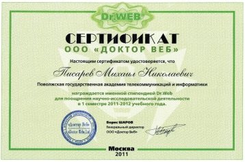

Конференции
* C 27 по 31 января 2014 года пройдет XXI Российская научно-техническую конференция профессорско-преподавательского состава, науных сотрудников и аспирантов университета с приглашением ведущих ученых родственных вузов и организаций.
* C 27 по 31 января 2014 года пройдет II Российская научно-методическая конференция профессорско-преподавательского состава, науных сотрудников и аспирантов.
* Научно-практическая конференция "Отраслевая экосистема инноваций. Путь в цифровое будущее".
25-26 апреля 2013 года в корпусе №2 прошла научно-практическая конференция "Отраслевая экосистема инноваций. Путь в цифровое будущее", организаторами которой были ОАО "Ростелеком" и ФГОБУ ВПО ПГУТИ. В работе конференции приняли участие работники нашей кафедры.
* Научная конференция "Инфокоммуникации: взгляд в будущее"
17 мая 2011 г., Самара. Компания "МегаФон" и департамент информационных технологий и связи Самарской области провели научную конференцию "Инфокоммуникации: взгляд в будущее" с участием студентов ведущих региональных вузов. Конференция организована при непосредственном участии деканата ФТР и кафедры МСИБ.
* Именные стипендии от dr.web.
